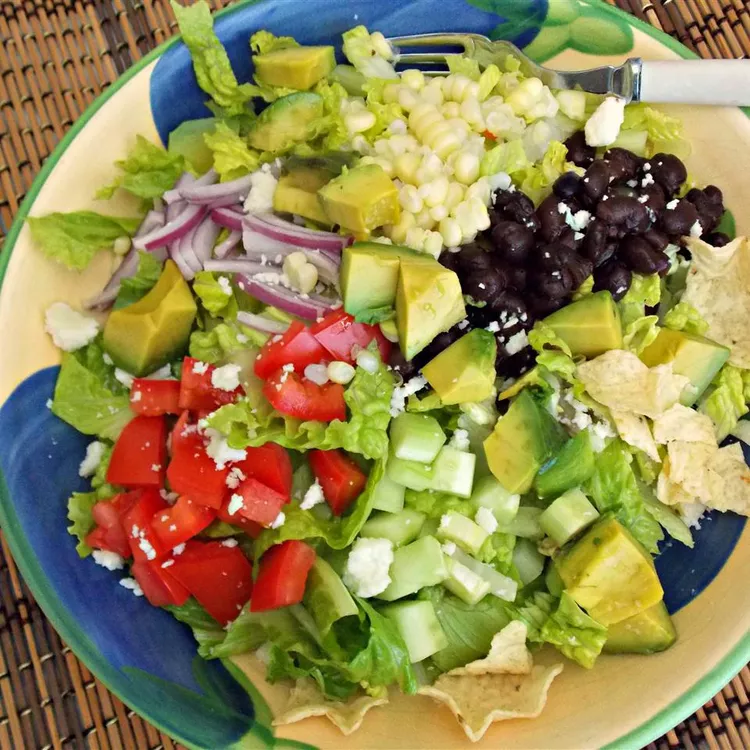

Baja Salad

Light, nourishing, and filled with hearty beans and crunchy tortilla chips
With sharp feta cheese, creamy avocado, and a tangy homemade dressing, you'll have a dish you won't soon forget. It only takes 20 minutes to whip up a Baja Salad, so you can have it whenever you need a little California experience!
Ingredients
Salad
- 1 (12 ounce) package romaine lettuce leaves
- 1 large tomato, diced
- 1 avocado, diced
- 1 pickling cucumber, diced
- ¾ cup crumbled feta cheese
- ¼ cup diced red onion
- ¼ cup white corn kernels
- ¼ cup cooked black beans
- ¼ cup crushed tortilla chips, or to taste
Dressing
- 2 tablespoons olive oil (Optional)
- 2 tablespoons lemon juice (Optional)
- ¼ teaspoon ground cumin (Optional)
- 1 pinch salt and ground black pepper to taste
Steps
- Place romaine lettuce in a large bowl. Add tomato, avocado, cucumber, feta cheese, onion, corn, and black beans; toss well. Sprinkle tortilla chips over salad.
- Whisk olive oil, lemon juice, cumin, salt, and pepper together in a bowl until dressing is smooth; drizzle over salad.
Back to main page